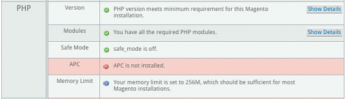
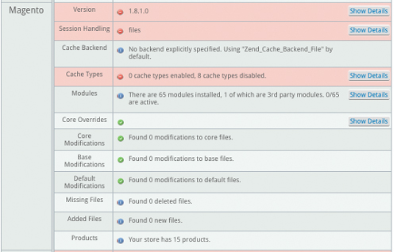
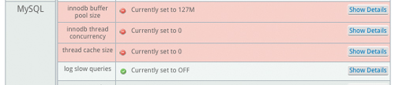

Not everyone knows how to build Magento sites in a way that is secure, able to be upgraded easily, and that minimizes conflicts. The Magento Code Audit tool allows you to get a detailed, inside look at how your site was built. Running through all of the various items that the Magento Code Audit Tool checks automatically could take 5-15 hours to do by hand.
Customer Paradigm built a Magento Code Audit tool that allows you to quickly evaluate the health of a Magento site. It looks at whether core Magento files have been changed, what third party extensions you have installed, your current version of Magento, and about two dozen other server settings that affect the performance of your Magento site.
We built this code audit tool, because we often work on Magento Community and Magento Enterprise sites that we didn't build. Not all Magento solutions companies will work on sites that other people or companies have built, but we're happy to help. Before we jump into a site, our development team likes to know how "clean" the site was built. Have core files been modified or changed? How many third party extensions are running on the site? All of these tools help us understand how much time a Magento Upgrade, Downgrade or emergency site repair might take.
You just need FTP access in order to upload and run the code audit; the system will email you a link to view the report.
Customer Paradigm’s Magento Leadership includes developing tools and extensions for the platform. This tool has saved us countless hours of time. We hope that you'll contact Customer Paradigm for Magento support and development needs.
This is a tool Customer Paradigm created, because we work on pre-existing Magento sites (unlike many other Magento solution partners), and it gives us insight into the overall health of a site, before we dive into a project.
All you need to do is create a new directory and upload a file to your site. Then you can run the code audit right from your browser. You'll need FTP access to upload the file.
If you want more detailed directions, this gives you more of a step-by-step approach:
When you upload the Magento Code Audit file to your site, and run it in your browser, the file contacts one of our application servers for instructions.
It then compares the standard, stock version of Magento with your system, and checks to see if any files are different. The system also checks additional information like your version of php, mySQL and other server information. The system does collect the information you put into the form to run the report, as well as other system variables, that help us understand how people are using the code audit tool, and prevent abuse of the system. The system will then contact our application server, and then will send you an email with a link to view the Magento Code Audit.
The report is hosted on the Customer Paradigm site. You will need approximately 50 MB of free space on your server for the code audit to run properly.
It's free, and yes, you can run it as often as you'd like.
We have run the Magento Code Audit on live, production servers, and the code audit tool is meant to be a non-invasive system test.The system has run on live sites that process more than $100,000 of orders per day, as well as on a small site hosted on Godaddy.
However, you might have non-standard things set up for your site, and our program may run in unxpected ways. We always recommend you backup your site first, to at least three locations, before you do anything new to the site. If you are nervous about running the tool, then run it on a development copy first, then your staging site, and then your live site.
Please make sure that you follow the instructions above, and make sure that you have given the /mageaudit/ directory 777 (Read-Write-Execute) permission.
Even if you do everything right, your Website might be hosted on a platform that locks down certain functions that could prevent the code audit from running properly.
Customer Paradigm is available to help you troubleshoot this, if you would like; contact us for hourly rates.
If you would like us to run the Magento Code Audit on your site, we are happy to do this for you. We will need FTP access to your site, and can run this for you for a fixed price of $95. Contact us here for more informaiton.
| Overall: |
In the overall category, the Customer Paradigm Code Audit grades your site based on the site performance and upgradability. Site performance is based on how fast the site loads, based on caching methods and various server settings. Upgrade scores are based on how many modifications are made to the system, as well as how many third party extensions are installed. An "A" score for upgradability for your Magento site is based on a clean, fresh installation of Magento Community or Magento Enterprise. A few minor changes will still earn a solid grade. Major core file modifications will decrease your score. |
|
| |
|
| Performance Grade: |
Your site's performance grade is based on various server settings, and include how you are using caching, if you are using all of the Magento base modules, and if your database configuration is set properly.
If you are running the Magento Code Audit on a test server, your performance grade may be really low. Most development servers have caching turned off -- because if you make a change to the test site, you want to have it appear on the site without delay.
Poor performance grades can usually be fixed with better mySQL settings, and installing caching properly. |
| Upgradability Grade: |
How easy will it be to upgrade your site? The Upgradability score ranks how "clean" your site's code base is to upgrade to the next version of Magento Enterprise and Community.
Customer Paradigm built the code audit tool, because we often work on sites that someone else built. And our code audit tool is a great starting place to figure out how the site was built. And if the previous development company took shortcuts in the process.
A site that has no core file modifications, no deleted or added files, and has a minimum number of third party extensions will rank with a score of "A." A site with 23 third party extensions, and 51 core file overrides is going to rank with a "C" or a "D."
The main issue when upgrading is that if changes have been made to the "core" files, any and all changes made to these core and base files will be wiped out when you upgrade. This means that if your developer changed a core file to display a fancy discount on the site, this change will need to be re-created in an extension or other area in order to preserve the functionality when upgrading.
So... why upgrade? Like most products, upgrading the software on your Magento site can give you new functionality, better performance, and patch security vulnerabilities. Certain new features or extensions will only work with the latest version or two of Magento. |
| Site: |
This is the name of the site that you ran the Magento code audit on. This allows you to know if you ran it on a live site, or on a test site. (A test site will often have a poor performance grade, as caching may be turned off, and you are likely not spending a lot of money on memory and processors.) |
| Date Run: |
This is the date that the code audit was run. We record this for you, so that if you run the code audit before and after an upgrade, you'll be able to have a date and timestamped report for archiving purposes. |
| |
|
| PHP: |
This section checks to see if the PHP programming language installed on your server meets the minimum requirements neeeded to run Magento successfully. |
|  |
| PHP Version: |
This checks the version of PHP on your server; if your version is out of date, certain functions will not work properly. For example, if you are running PHP 5.3.28, this is likely okay for a current version of Magento. |
| PHP Modules: |
This checks to make sure that all of the various PHP modules are installed. Most hosting company will have the PHP Modules installed by default, but some of the cloud-based do-it-yourself systems may not have these PHP modules installed at first.
Often, we'll find that a missing PHP module can break functionality of a site... and can be a headache to troubleshoot.
The system checks for:
- curl - a module that allows you to send and receive information using URL syntax. It's often used for URL-friendly rewrites, and works with the .htaccess file on Apache.
- dom - the dom extension allows Magento to work with XML documents through PHP programming.
- gd - the GD library allows PHP to create images automatically, and display them in the browser, including JPG, GIF, PNG, SWF, TIFF and others.
- hash - used for public key / private key encryption. Without hashing, any usernames or passwords in your database are stored as plain text. Not so ideal.
- iconv - allows php to convert a string into a encoded character. For example, if someone puts in an illegal character (perhaps they are overseas on a foreign language keyboard), the system can put in the proper symbol and translat if for Magento.
- mcrypt - used as an interface between PHP for supporting encription methods, such as DES, Blowfish and more.
- pcre - used as a way to handle Perl-compatible regular expressions.
- pdo - used as a way to have PHP connect to a database.
- pdo_mysql - used as a way to have PHP connect directly to a mySQL database.
- simplexml - allows PHP to very simply and easily convert XML to an object in Magento, that can be processed by the system.
(This is a bit more technical, but understanding what modules are not installed for PHP allows you to understand why certain systems are not working properly.) |
| PHP Safe Mode: |
If PHP Safe mode is on, your site might not function properly.
PHP safe mode is often used on shared servers to restrict what PHP scripts can do on a site. It's often used to restrict or lock down specific functions, including moving, opening or executing files. PHP safe mode has been deprecated as a feature in PHP 5.3.0, and has been removed in versions greater than PHP 5.4.0. |
| APC: |
Known as the Alternative PHP Cache (APC), it is a free and open code caching system for PHP. The goal is to keep certain requests in memory, and reducing the disk usage and database calls. APC has been used at Facebook, and can increase the speed of a site by 300% or more in some cases. |
| PHP Memory Limit: |
This is the amount of memory that PHP has alloted to run on your site. Too low, and you won't be able to have certain functions run properly. Set too high, it can allow certain processes to run out of control. 256 MB is sufficient for most Magento installations, but 512 MB is preferable, according to Magento. |
| |
|
| Magento: |
These are the Magento-specific variables the code audit tests for when the code audit runs. |
|  |
| |
|
| Version: |
This displays the version of your Magento site (either Community or Enterprise). If you are not running the most current version, the system will let you know the most recent version. The code audit tool will work with systems dating back to Magento Community 1.4.1.1. |
| Session Handling: |
The way that a Website knows that a customer goes from the home page, to a category page, to a product page and adds something to their cart is done via session management. Without session management, each page you visit is treated as a separate instance. Session handling in Magento is done in two ways:
- Files. Session management using files is much faster than using the database method.
- Database. Magento can keep track of past users in the mySQL database, but this means that each time a visitor requests a page, the system has to write their information into the mySQL database. This is slow, and not best practice.
- Memcached can speed up the Magento storefront by moving the session files to a highly optimized separate system.
|
| Cache Backend: |
If you do not specify the backend caching system, Magento will use the "Zend Cache Backend File" system by default. |
| Cache Types: |
In order for your site to load quickly, Magento creates many different caching systems to help reduce the need to look up of information from the database, and compile pricing, discounts and other information.
If your site is on a test server or still in development, then it's normal that these caches are turned off. But if your static blocks, layouts and EAV types are disabled on a live site, your site is going to be running a lot slower than it should.
Turning on these caches is something you are often able to do in your Magento admin panel. They might be disabled or invalidated if you've made major changes recently to your site.
Magento Enterprise has additional caching, including Full Page Caching. This allows you to have extremely fast (i.e. sub-2.0 second) page load times. The fast your site loads, the more sales conversions you are likely to see... as well as see better search rankings as well. |
| Modules: |
Modules in Magento are both a blessing and a curse.
Magento modules are a blessing, because they allow you to have advanced functionality that isn't built into the core Magento platform.
Want to integrate with a third party warehouse? Accept alternative payment methods? Display a red image for your t-shirt when the red option is selected on a product page? Extensions can do all of this, and more.
Without extensions, a Magento site is limited to only the functionality that is built into the Magento code release.
But extensions are often a curse. Because they can conflict with one another, and cause system instability. Our advice: only use the extensions that are absolutely necessary, and do rigoruous testing to make sure that they don't break anything. |
| Core Overrides: |
The core overrides test checks to see if there have been any overrides in the /app/code/local/Mage/ location:
When should you override Magento core files? Honestly, you shouldn't. You can introduce system instability, and wreak havoc on your Magento site. It can make Magento extensions behave strangely. And if you ever want to upgrade, you'll lose any of these changes.
Instead, you'll want to make changes that extend core functionality by creating a module.
This section of the Magento code audit lets you know if your Magento Programmer has taken shortcuts and changed core files. |
| Core Modifications: |
The core modification test checks to see if any of the files in the /core/Mage/ directory have been changed or added to the system. This is not a best practice, and like core overrides, can introduce problems into your system, and have issues during the upgrade. |
| Base Modifications: |
This test looks for altered files in the /base/layout, /legacy/base/template, and base/template directories.
Magento works from a design "fallback" system, where if a theme doesn't have a specific design option (i.e. the product grid on a category page), it will "fallback" to the base design files.
It's much, much better to use a separate design than to go in and hack the base design templates in the system.
Again, if you upgrade your site, or even want to implement a new design for your site, your options may be limited if base files have been modified. |
| Default Modifications: |
Just like you shouldn't modify base design files, you also shouldn't modify your default design files in the /app/design/frontend/default/default files. Often people will change the layout or template file in this location, as they don't want to extend the functionality properly. |
| Missing Files: |
If there are missing files in the Magento code base, this system will check for them and let you know what files are missing.
This is a great way to make sure that when you are copying a site from one location to the next, that you've copied all of the core files. (This won't check for all of your modules or design files, though.) |
| Added Files: |
Have you added new files to your site? The system will check to see if there are any new files in the /core/Mage/ file tree, the base/layout area, or in the base/template portion of the site.
It's usually not a great idea to add new files to the core directories; Magento has a place for new files to live. Again, you'd likely lose any of these files in an upgrade.
Often we'll see a breadcrumbs-copy.phtml, or a bookmarks.xml.backup-01-01-2014 file, which is a server-based copy of a file. This isn't a big deal. It usually means that someone was working on that file, and created a live backup on the server, so that they could quickly revert if they messed something up. |
| Products: |
This line lists how many products your site has in the catalog. The number of products will include all products, regardless of whether or not they are active or inactive.
If the number seems larger than you expect, it may be because this report will show the simple products that are used to make up a configurable product. For example, if you have T-shirt that is sold in four sizes (S, M, L, XL) and three colors (Red, White, Blue), then you would have 4 x 3 = 12 simple products:
- Small - Red
- Small - White
- Small - Blue
- Medium - Red
- Medium - White
- Medium - Blue
- Large - Red
- Large - White
- Large - Blue
- X-Large - Red
- X-Large - White
- X-Large - Blue
But on the front end of the site, it would be listed as a single configurable product on your Magento storefront. |
| |
|
| mySQL: |
mySQL is the database system that runs your site. It's a free, open source system that can perform extremely well -- but only if you have it configured properly. |
|  |
| innodb buffer pool size |
The buffer pool is the memory that is used by your mySQL database. It caches the data and indexes from the database in memory.
Magento recommends a value of at least 256 MB. On a dedicated database server, this setting can be 80% of physical RAM.
On a server where memory is shared between the database and application, this number should be around 40% physical RAM. Ideally, this value is larger than the size of your database. |
| innodb thread concurrency |
Do you remember the last time you got a busy signal when you called someone on the phone? With call waiting and voicemail, it's rarely the case these days.
Your server is set to run several different threads from PHP and Magento to the system at the same time. If this is set too low, then the site slows down to a crawl, because each person coming to the site essentially has to wait in line for the mySQL database connection.
Magento recommends a value of at least 8 threads running at the same time. If possible, this value should be set as high as the maximum (16). |
| thread cache size |
How big should each mySQL query thread be allowed to use?
This should be set to a minimum of 8 (the default is 0). On a server with a large amount of memory, it can be set to 32 or 64.
Note, this may be a false positive on Mysql5 installations, as in Mysql 5 a concurrency of 0 is unlimited. |
| log slow queries |
On a production server, this setting should be set to OFF as it is considerable overhead on the database |
| max connections |
This checks to see how many simultaneous connections the Website can have to the database at any given time. By default, this is set to 100. If this is set too low, the site will be non-responsive. If you set it too high, though, you can have so many connections that the mySQL database will slow down due to too many connections.
Magento recommends a setting of at least 100. |
| sort buffer size |
Magento recommends that this be set to at least 7 MB in size.
This is the amount of memory that is allocated per thread. The sort buffer size is a per-session buffer that is allocated each time it's needed by a database connection. The sort buffer is often used when there is no index available in a mySQL database table. |
| key buffer size |
In order to minimize how many times the mySQL database needs to interact with the disk, the system uses a strategy to cache the most frequently accessed table blocks in memory. If this is set to zero, no key cache is used. This is often used during site search on Magento.
We recommend the key buffer size is set to at least 200 MB for optimal site search speed. |
| innodb additional mem pool size |
This is another setting that is used for caching data and database indexes in memory, instead of having the database have to look up information by accessing the hard drive on the mySQL database server.
The larger the buffer pool, the more the database acts like an in-memory database, and avoids having to look up information fro the hard drive. (This speeds up performance.)
We recommend this is set to at least 15 MB for best lookup time on your Magento site. |
| mySQL version |
The Magento Code Audit tool checks to see what version of the mySQL database your Magento site is using. A version that is too old for your site will suffer performance issues, as well as could have missing functionality.
A version of mySQL that is too new might be a red flag if you are running a much older version of Magento (i.e. Community 1.4) that wasn't designed to run on a more current version of the mySQL database. |
| version compile os |
The system checks to see what operating system is running for your mySQL database server; this is normally not an issue, but can assist with troubleshooting. |
| version compile machine |
This setting checks to see what type of architecture; usually this is fine, but can also assist with troubleshooting if it is a non-standard system. |
| dbsize |
This is normally set to '0' - meaning there isn't a limit on the size of the database.
The mySQL database is limited by the disk space on the server. If fill up the hard drive, any tables that you're trying to write to will often become corrupted. It's a quick fix to repair those tables, but you'll likely need to run a script to go through every single table in Magento's mySQL database to do this.
And Magento, by default, has a lot of tables. Magento Community has approximately 327 mySQL tables, and the Enterprise platform has about 450 mySQL database tables. |
| |
|
Need Help With Your Magento Site? Customer Paradigm's team of Magento Experts Can Help!
Call 303.473.4400 or visit here >>